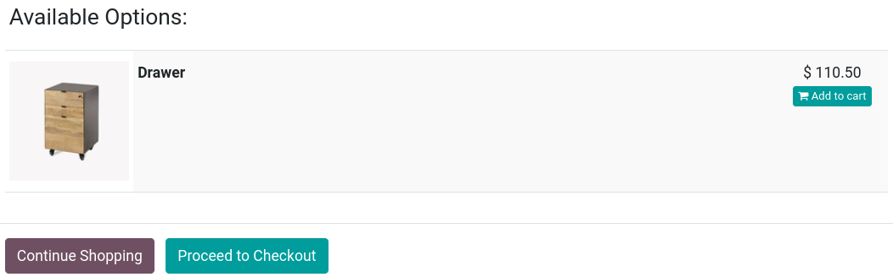
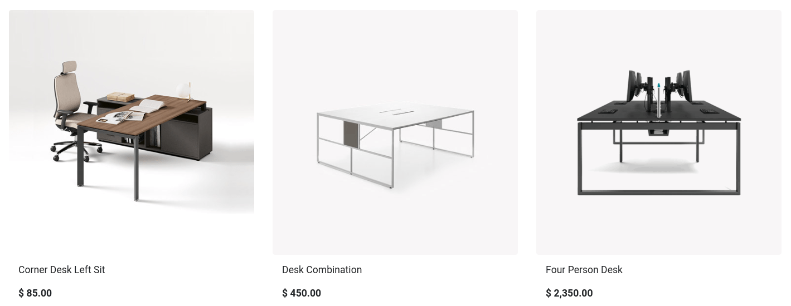

Cross-selling and upselling¶
Any sales process is an opportunity to maximize revenues. Cross-selling and upselling are sales techniques consisting in selling customers additional or more expensive products and services than what they were originally shopping for. It is a great way to maximize the value of each one of your customers.
Cross-selling can be done via two features:
Optional products upon adding to cart;
Accessory products on the checkout page.
Upselling is only done via alternative products on the product page.
See also
Cross-selling¶
Optional products¶
Optional products are suggested when customers click Add to cart, either from the product page or catalog page. Upon clicking, a pop-up window opens with the optional products displayed in the Available Options section.
To enable optional products go to , select a product, go to the Sales tab, and enter the products you wish to feature in the Optional Products field. Optional products are linked to the product(s) they are set up with on the product template. They only appear when that product is added to the cart.
Tip
You can also access the Sales tab of the product template by selecting a product on your main shop page and clicking Product in the top-right corner.
Accessory products¶
Accessory products are displayed in the Suggested Accessories section before processing to checkout at the Review Order step.
To enable accessory products, go to , select a product, go to the Sales tab, and enter the products you wish to feature in the Accessory Products field. Suggested accessory products are linked to the product(s) they are set up with on the product template. They only appear when that product is at the checkout process review.
Upselling¶
Alternative products¶
Alternative products are suggested on the product page and usually incentivize customers to buy a more expensive variant or product than the one they were initially shopping for.
To enable alternative products, go to , select a product, go to the Sales tab, and enter the products you wish to feature in the Alternative Products field. Then, go to the related product page by clicking Go To Website, and click . Stay on the Blocks tab, and scroll down to the Dynamic Content section. Then, drag and drop the Products building block anywhere on the product page.
When placed, in Edit mode, click the block to access various settings for that Products building block. In the Filter field, select Alternative Products. You can configure several additional settings, such as how many elements are displayed (Fetched Elements), the Template used, etc.